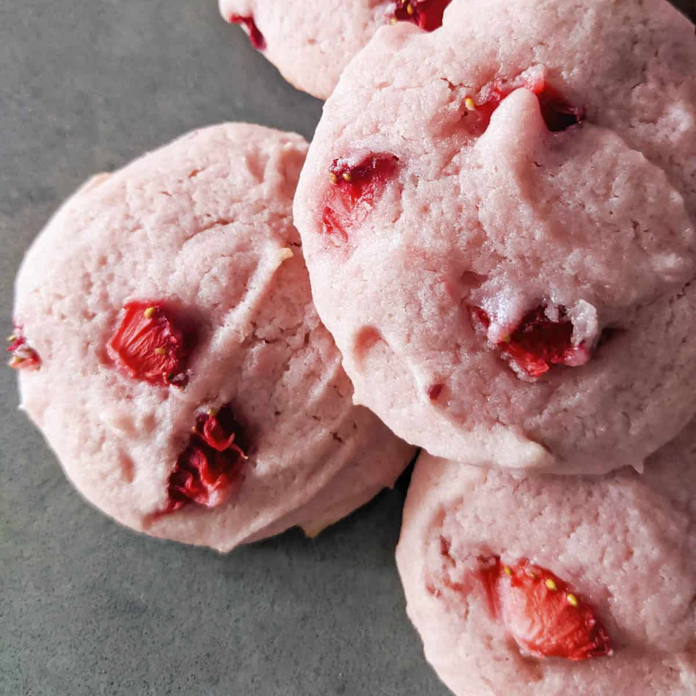

Strawberry Cookies

Learn how to make some delicious strawberry cookies!
Ingredients
- Sugar
- Vegetable Oil
- All Purpose Flour
- Lemon Juice
- Egg
- Baking Powder
- Vanilla
- Fresh Strawberries
Steps
- In a large bowl whisk together the egg, juice, oil, vanilla and sugar, until well combined.
- Add flour and baking powder and mix until combined.
- Gently fold in the chopped strawberries just until combined.
- Either form into balls or drop by spoonfuls (approximately the size of a golf ball.
- Place on cookie sheets, sprinkle with a little sugar and bake for approximately 15 minutes.